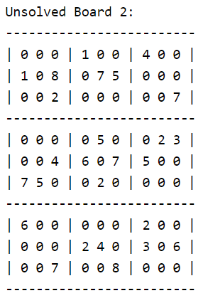
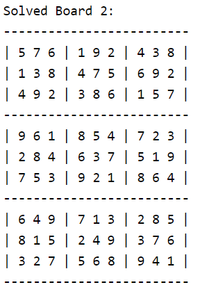

The sudoku solver was a project that I found really interesting. Given a semi-empty "sudoku board", this program could figure out the correct solution for the board if a possible solution exists. My approach to this solution was somewhat brute force, and solved it in a recursive fashion. For each empty square (which held a zero), if a number wasn't already in our row, column, or box, we placed that number in the empty square (temporarily), and we made our way to the next empty square and repeated the process until our chosen numbers don't fit into a solvable outcome. Once we realize our number choices from earlier won't result in solving the board, we jump back to the "problem square" to try the next number.
If you are interested in seeing how I chose to implement this project, feel free to take a look at the souce code.

